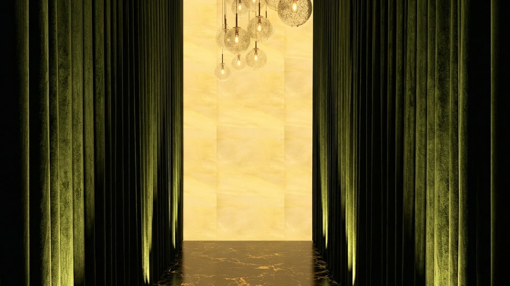
Dinner, music, and the long part of the night — an evening that unfolds in chapters. Bonifacio Global City, Manila, with chef partner Todd English.
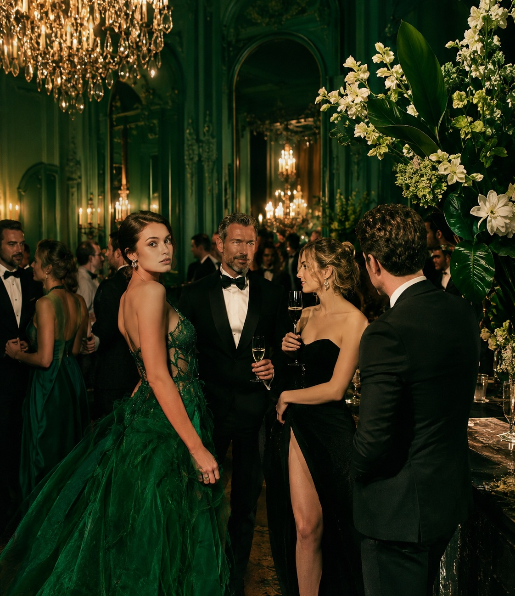
A room that begins with supper — and becomes the night.
Contents
Twenty-two pages, three parts — an evening at Jade, the menu, and the investment.
IAn Evening at Jade
- The Story of Jade04
- The Grand Room05
- An Evening at Jade06
- Rooms & Details07
IIMenu
- Todd English · The Chef Partner09
- From Todd’s Kitchen10
- The Bar & The Cocktails11
- The Cellar12
IIIThe Investment
- The Road to October14
- The Build, Phase by Phase15
- The Opportunity16
- Where the ₱40 Million Goes17
- Five-Year Forecast18
- The Return19
- How the Room Earns20
- Press Assets21
- Contact22
How to use this kit: every room and detail in these pages reflects the house as of August 2026. High-resolution versions of all photography are available for editorial use; see Press Assets, page 21.
An Evening at Jade
✦A green velvet corridor, a lit slab of onyx, and a room that does not tell you what time it is.
Jade Supper Club · Media Kit 2026 · 03/22the storyJade Supper Club
Manila has always known how to stay up late. What it did not have was one room that could hold the whole night — dinner worth dressing for, a band worth staying for, and a bar that is still pouring when the kitchen has gone quiet. Jade was built to be that room.
It begins as a corridor. Green velvet on both sides, brass underfoot, and at the end a single slab of backlit jade onyx that glows like a held breath. You do not see the dining room until you are inside it — and then it opens: a double-height space in deep emerald and warm brass, banquettes running the long wall, a proscenium stage at the far end, and a spiral staircase in polished brass climbing to a mezzanine that looks down on all of it.
The cooking is fire-led and Manila-anchored: a wood oven at the centre of the kitchen, an ice bar for the raw list, Philippine seafood and Japanese precision meeting Mediterranean technique. The food is developed in partnership with chef Todd English, whose five James Beard Awards and thirty-five years of wood-fired cooking sit behind the pass — his first fine-dining room in the Philippines.
The name is not borrowed from the stone alone. In the Philippines the jade vine — tayabak — is a native flower found nowhere else on earth: cascading blooms of an impossible blue-green, rare and half-hidden, the kind of thing you do not simply see but come upon. Jade takes its name and its colour from that flower — a room with a Filipino soul, not an imported one.
“A supper club is not a restaurant with a band. It is one evening, written in three acts, and the food is only the first.”
Jade Supper Club
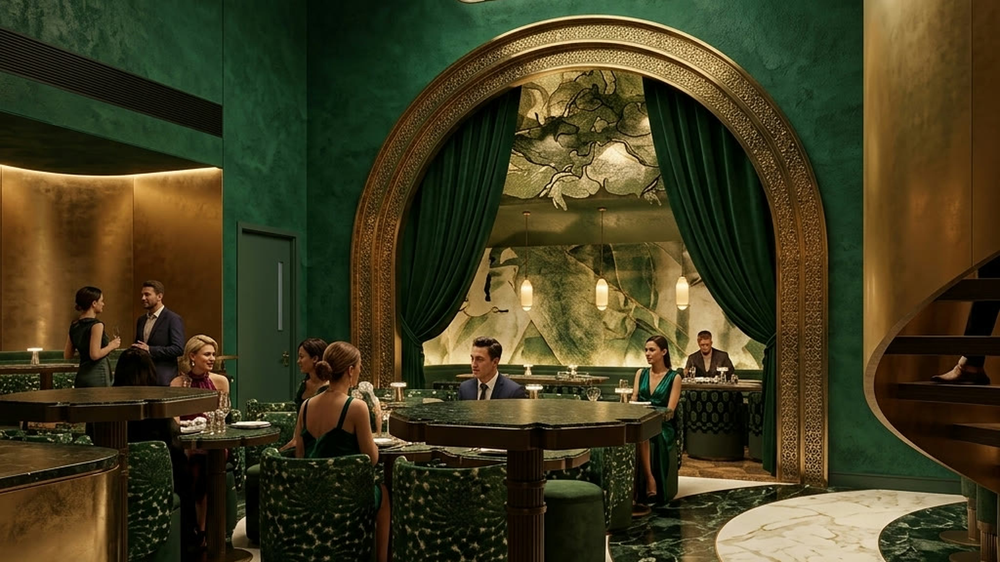
“The room has no clock and no windows. That is not an accident — it is the entire design brief.”
An Evening at Jade
- 6:00
Doors
The corridor lights come up. First seating in the Grand Room; the ice bar is dressed and the oven is at temperature.
- 6:30
The Ice Bar
Oysters, crudo and hand rolls off the raw list. A pianist plays the room quietly — no vocal yet.
- 8:00
Peak Service
The wood oven runs flat out. Whole lapu-lapu, dry-aged ribeye and the flatbread that started it all.
- 9:00
First Set
The proscenium curtain opens. Forty-five minutes — jazz-leaning, with a vocalist, mixed live for the whole floor.
- 10:00
Second Seating
The room turns. Later tables arrive dressed for the music rather than the menu; the bar takes over the front.
- 11:00
Second Set
Louder, later, closer to the floor. The mezzanine fills; the spiral staircase becomes the best seat in the house.
- 12:00
The Kitchen Closes
Last order from the full menu. Bar bites — the Jade Dragon, Midnight in Manila — run until the end.
- 1:00
The Late Room
Lights down two stops. Resident DJ, sake carafes, and the part of the night the regulars come for.
- 3:00
Last Call
The brass panels dim one at a time. The corridor is the last thing you see, exactly as it was the first.
Rooms & Details
Six rooms, one material palette — emerald, brass, onyx and velvet, from the corridor to the cellar.
The Grand Room, laid and lit an hour before doors — the only quiet it gets.
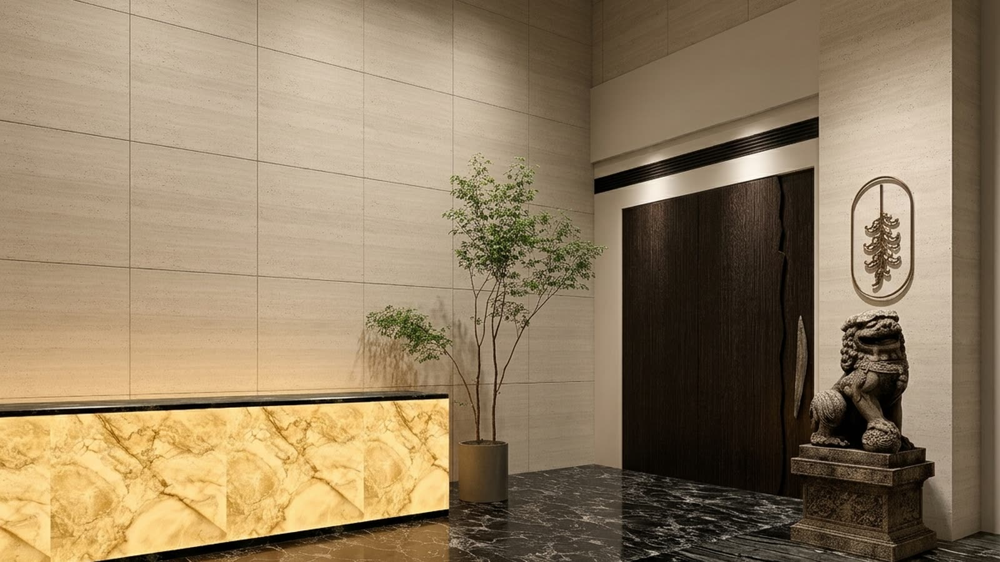
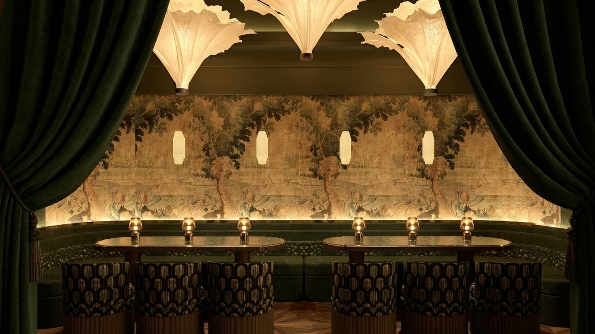
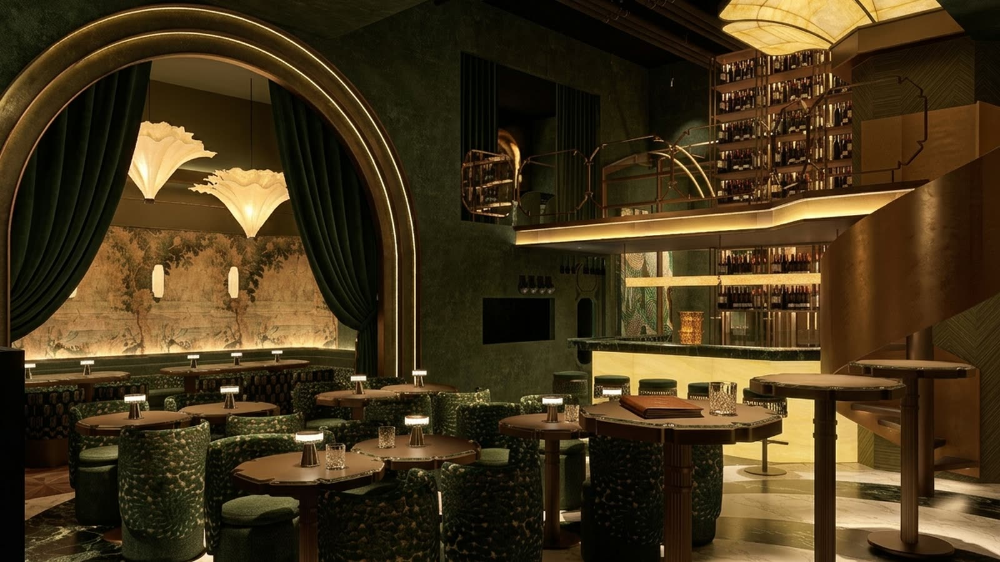
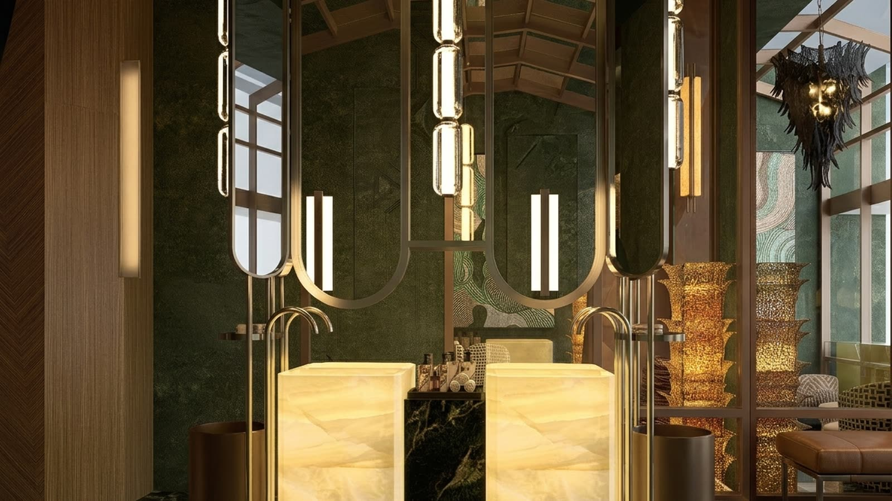
Menu
✦Todd English at the pass, Roman Mutzner behind the bar, and a cellar built for a long night.
Jade Supper Club · Media Kit 2026 · 08/22Todd English
The Chef Partner — five James Beard Awards, fifteen cookbooks, and his first fine-dining room in the Philippines.


From Todd’s Kitchen
Signature plates from Todd English’s own restaurants — the fire, the pasta and the tableside grammar he brings to Jade.

“The style in one plate: hand-made pasta, wood fire, nothing hidden.”

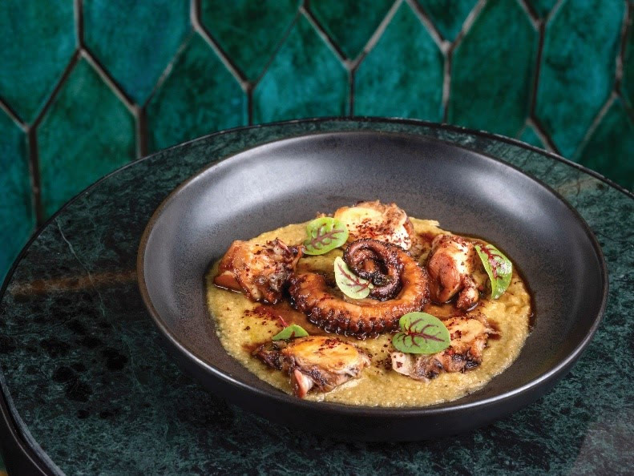
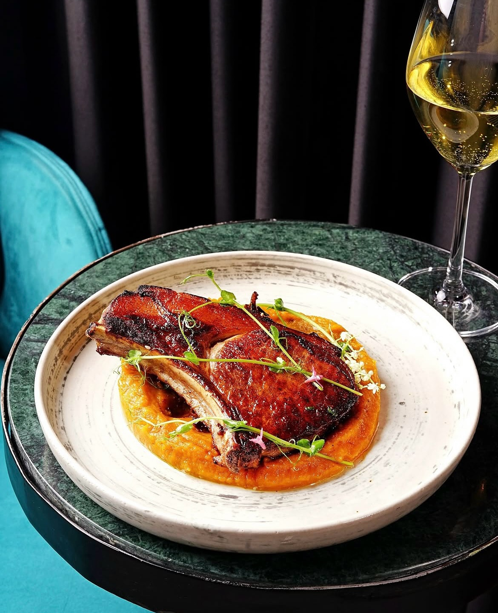
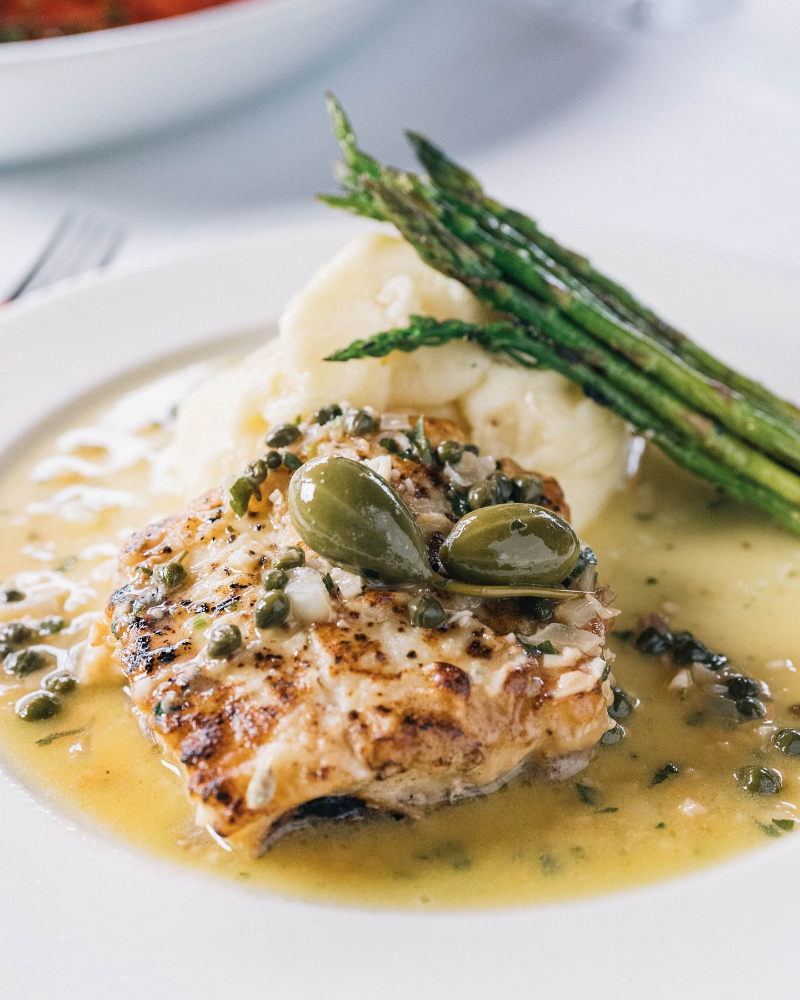
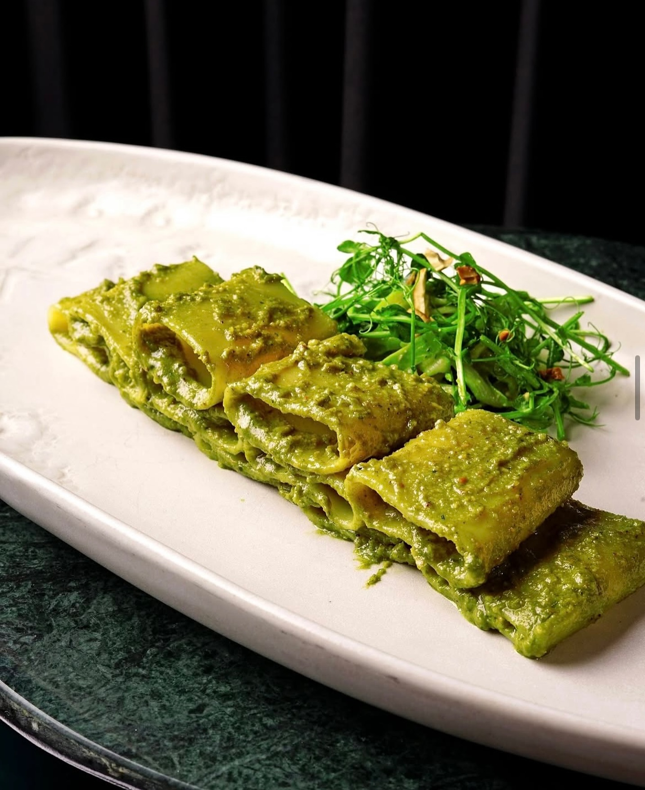
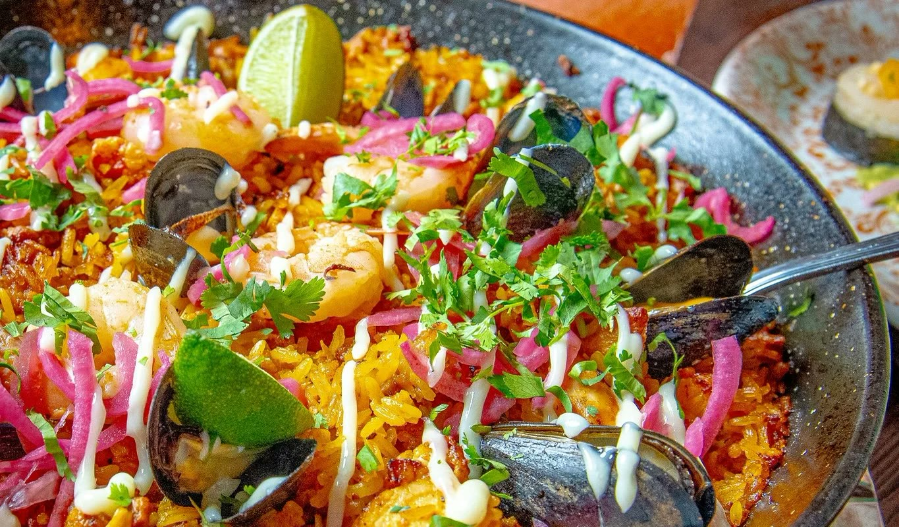
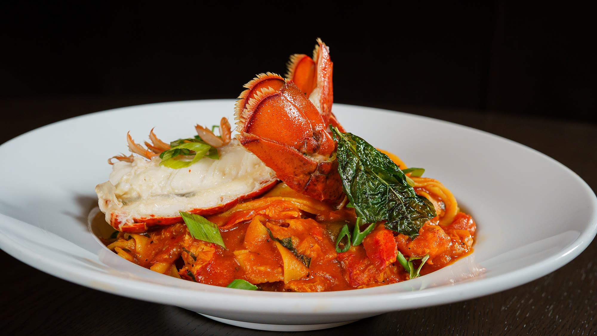

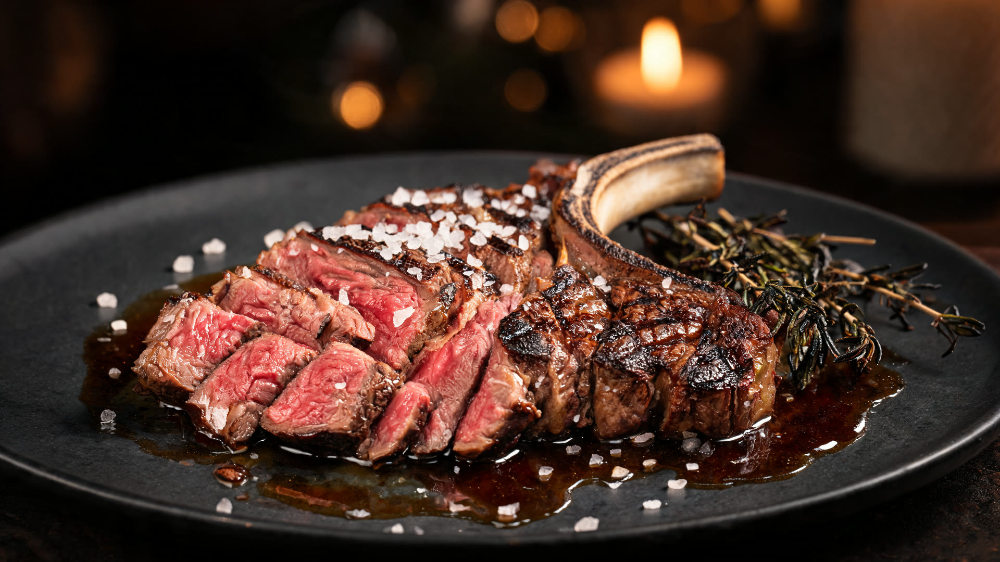
The Bar Partner
The newest addition to the house — and one of the most decorated bartenders in Europe — shaping the Jade bar.
The Cellar
A cold room built for sake first and wine second — the reverse of every other list in the city.
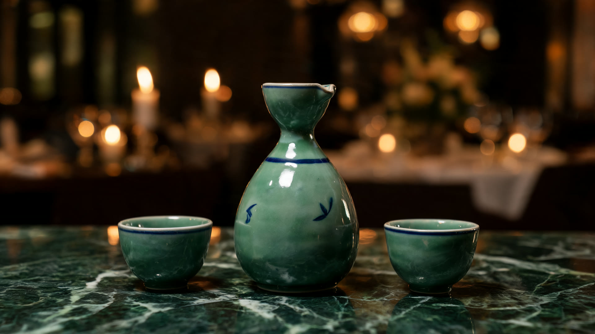

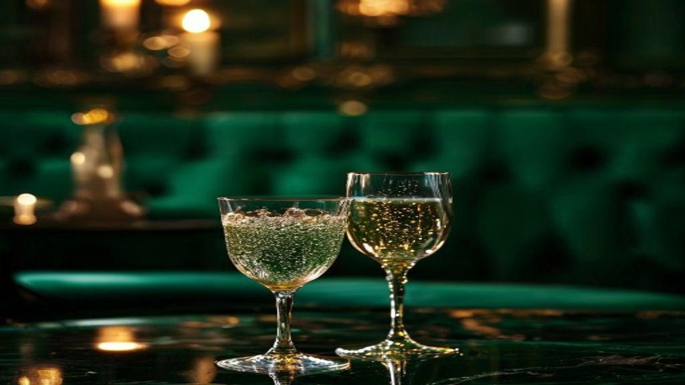
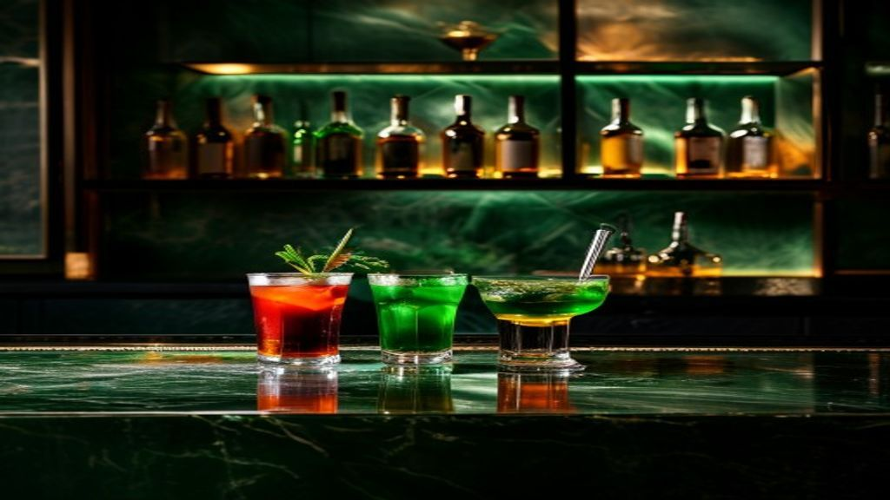
For sommeliers & press: the full sake list — including allocated daiginjo and single-cask whisky held off-menu — is available on request, along with tasting notes from the cellar team. Corkage is ₱2,500 per bottle, two bottles maximum.
The Investment
✦A ₱40 million build, a ₱13 million ticket, and a room designed to earn its keep from the first Saturday.
Jade Supper Club · Media Kit 2026 · 13/22The Road to October
- Now
On Site
Three months of advance rent and three months of security deposit — ₱3,373,966 — are placed with the landlord. Design is set with BA8 Concepts, and Jerikson Construction is on site: the first four build phases — structure and mezzanine, finishes, plumbing and electrical rough-in — are all under way.
- Aug
Permits & Long Leads
Permits and licences at ₱400,000 are lodged, and the point-of-sale goes in for BIR accreditation — a fixed three-to-four-week clock that gates opening day more tightly than the build does. Fire suppression, smoke detection and air conditioning are coordinated with building management.
- Sep
Systems & the Kitchen
Automated lighting, exhaust and ducting, CCTV and biometrics. The cold line, the hot line and the Josper charcoal oven are delivered and wired. Custom furniture installation begins, and the bar's ice cap goes in.
- Oct
Staff, Stock, Rehearsal
Kitchenware, bar and glassware at ₱1,100,000. Hiring closes on the forty-four-strong opening roster and one month of paid training begins at ₱1,135,960. Menu R&D runs against ₱6,000,000 of opening stock. Plants and soft finishes land last.
- Open
Doors
Friends and family from 30 October, then press, then full service — Tuesday to Sunday, two seatings at 6PM and 10PM, bar until 3AM.
- Yr 1
The First Twelve Months
Year One is modelled at ₱76.9M in the base case and ₱130.7M in the high case, against a 72% gross margin.
The Build, Phase by Phase
Eight phases from framing to handover, tracking to a 30 October completion. Site photography drops into these frames as each phase is shot — the schedule and the captions are live; only the images are pending.
Site access: walkthroughs are arranged for prospective investors on request, and a dated photo set is issued at the close of each phase.
The Opportunity
The same five-year model, run twice — once on conservative trade, once on the room performing to the capacity it was built for.
The Ticket
₱13,000,000
An 18% holding in the operating company, drawn against a total project cost of ₱40,083,352.
The Policy
90% Distributed
Ninety per cent of net profit is paid out annually. The remaining tenth is retained against ongoing capex, budgeted at 2% of revenue.
The Horizon
Five Years
Modelled to Year Five on a ten-year leasehold life, with the base case paying back in 3.6 years and the high case in 1.7.
| Base Case | High Case | |
|---|---|---|
| Year 1 Revenue | ₱76,928,570 | ₱130,714,280 |
| Year 5 Revenue | ₱126,119,774 | ₱218,531,270 |
| Year 1 Gross Margin | 72.1% | 72.4% |
| Year 1 EBITDA | ₱26,367,504 | ₱62,547,772 |
| Year 1 EBITDA Margin | 34.3% | 47.9% |
| Year 1 Net Profit | ₱17,178,614 | ₱43,952,013 |
| Year 5 Net Profit | ₱33,553,232 | ₱80,110,688 |
| Five-Year Distributions, 18% Holder | ₱20,477,536 | ₱49,709,054 |
| Cumulative Return on ₱13M | 57.5% | 282.4% |
| Payback Period | 3.58 years | 1.72 years |
| Internal Rate of Return | 15.23% | 60.30% |
A note on the two cases. The base case assumes the house turns roughly one full cover a night across a six-day week. The high case assumes nightlife revenue matching dining rather than trailing it. Neither assumes a price increase. Full model available under NDA.
Where the ₱40 Million Goes
Depreciation: ₱3,153,160 a year — ₱1,719,525 on ₱17,195,251 of leasehold improvements over ten years, ₱1,433,635 on ₱7,168,175 of equipment over five. Net book value at the end of Year Five is ₱8,597,625. Ongoing improvement capex is budgeted at 2% of revenue.
Five-Year Forecast
In millions of pesos. Two rooms, two revenue lines — dinner service and the late half of the night — modelled separately and summed.
| Yr 1 | Yr 2 | Yr 3 | Yr 4 | Yr 5 | |
|---|---|---|---|---|---|
| Dining | 42.3 | 50.8 | 58.4 | 64.2 | 69.4 |
| Nightlife | 34.6 | 41.5 | 47.8 | 52.5 | 56.8 |
| Total Revenue | 76.9 | 92.3 | 106.2 | 116.8 | 126.1 |
| Revenue Growth | — | +20.0% | +15.0% | +10.0% | +8.0% |
| Cost of Sales | 21.4 | 25.7 | 29.6 | 32.5 | 35.1 |
| Gross Margin | 55.5 | 66.6 | 76.6 | 84.2 | 91.0 |
| Operating Expenses | 29.1 | 36.7 | 38.5 | 40.5 | 42.5 |
| EBITDA | 26.4 | 29.9 | 38.0 | 43.8 | 48.5 |
| EBITDA Margin | 34.3% | 32.4% | 35.8% | 37.5% | 38.5% |
| Net Profit | 17.2 | 19.8 | 25.8 | 30.1 | 33.6 |
| Net Margin | 22.3% | 21.4% | 24.3% | 25.7% | 26.6% |
| Yr 1 | Yr 2 | Yr 3 | Yr 4 | Yr 5 | |
|---|---|---|---|---|---|
| Dining | 65.4 | 77.1 | 88.7 | 99.3 | 109.3 |
| Nightlife | 65.4 | 77.1 | 88.7 | 99.3 | 109.3 |
| Total Revenue | 130.7 | 154.2 | 177.4 | 198.7 | 218.5 |
| Revenue Growth | — | +18.0% | +15.0% | +12.0% | +10.0% |
| Cost of Sales | 36.1 | 42.6 | 49.0 | 54.8 | 60.3 |
| Gross Margin | 94.6 | 111.7 | 128.4 | 143.8 | 158.2 |
| Operating Expenses | 32.1 | 40.4 | 42.5 | 44.6 | 46.8 |
| EBITDA | 62.5 | 71.2 | 86.0 | 99.3 | 111.4 |
| EBITDA Margin | 47.8% | 46.2% | 48.5% | 50.0% | 51.0% |
| Net Profit | 44.0 | 50.4 | 61.3 | 71.1 | 80.1 |
| Net Margin | 33.6% | 32.7% | 34.6% | 35.8% | 36.7% |
Cost of sales runs at 27.9% in the base case and 27.6% in the high, for a gross margin of roughly 72% in both. Corporation tax is taken at 26%. Depreciation of ₱3,153,160 a year is charged below EBITDA; the model carries no debt and no interest.
The Return on ₱13 Million
An 18% holding, distributions paid annually out of net profit. Both cases below are drawn from the same model as the forecast on the previous page.
| Net Profit | Distributed | 18% Share | ROI | Cumulative | |
|---|---|---|---|---|---|
| Year 0 | — | — | (13,000,000) | — | (13,000,000) |
| Year 1 | 17.2M | 15.5M | 2,782,936 | 21.4% | (10,217,064) |
| Year 2 | 19.8M | 17.8M | 3,205,605 | 24.7% | (7,011,459) |
| Year 3 | 25.8M | 23.2M | 4,183,133 | 32.2% | (2,828,326) |
| Year 4 | 30.1M | 27.1M | 4,870,239 | 37.5% | 2,041,913 |
| Year 5 | 33.6M | 30.2M | 5,435,624 | 41.8% | 7,477,536 |
| Five Years | 20,477,536 | 57.5% | 7,477,536 |
| Net Profit | Distributed | 18% Share | ROI | Cumulative | |
|---|---|---|---|---|---|
| Year 0 | — | — | (13,000,000) | — | (13,000,000) |
| Year 1 | 44.0M | 39.6M | 7,120,226 | 54.8% | (5,879,774) |
| Year 2 | 50.4M | 45.3M | 8,162,157 | 62.8% | 2,282,383 |
| Year 3 | 61.3M | 55.2M | 9,927,887 | 76.4% | 12,210,270 |
| Year 4 | 71.1M | 64.0M | 11,520,852 | 88.6% | 23,731,122 |
| Year 5 | 80.1M | 72.1M | 12,977,932 | 99.8% | 36,709,054 |
| Five Years | 49,709,054 | 282.4% | 36,709,054 |
Distribution Policy
90% of Net Profit
Paid annually. The remaining tenth is retained for ongoing improvement capex, budgeted at 2% of revenue.
Cumulative Return
57.5% · Base
₱20,477,536 returned on ₱13,000,000 over five years, with the holding intact at the end of it.
Cumulative Return
282.4% · High
₱49,709,054 on the same ₱13,000,000, if the room trades closer to a full house on a Friday and Saturday.
Figures in parentheses are cash out. Distribution is 90% of net profit, paid annually. The base case crosses into positive cumulative cash during Year Four; the high case crosses during Year Two.
How the Room Earns
Every area in the house is sold on a minimum spend rather than a cover charge. Filled once, the room takes ₱262,000 in a night.
| Seats | Minimum Spend | |
|---|---|---|
| Private Dining Room | 6–12 | ₱50,000 |
| Omakase Counter | 4–5 | ₱30,000 |
| Banquette Three | 8–10 | ₱20,000 |
| Banquette Four | 8–10 | ₱20,000 |
| Banquette One | 6 | ₱15,000 |
| Banquette Two | 6 | ₱15,000 |
| Dining Room, ₱4,000 a head | 28 | ₱112,000 |
| One Cover | 96 | ₱262,000 |
What the Base Case Asks
₱246,565 a Night
Year One revenue over 312 trading nights is one full cover of the house — before the second seating, before the bar, before a single buyout.
Gross Margin
72%
Cost of sales at 27.9%. A supper club sells a room and a night, not only plates — which is what holds the margin above a restaurant's.
The Payroll
44 at Open
₱1,362,100 a month across kitchen, floor and bar, rising to 48 in the high case. The largest single line in operating expense.
The rest of the operating line: rent at ₱4.5 million in Year One on 180 sqm, a 5% revenue share, ₱600,000 a month for talent — DJs and live sets — ₱205,000 in professional services, ₱198,000 in staff benefits, ₱50,000 in marketing, and roughly ₱219,000 in utilities, internet and storage.
Press Assets
Everything in this kit — and more — is available in high resolution on request.
The corridor — the house's signature image.
Photography
All six rooms, the bar, the stage and the food from the kitchen — in print resolution.
The Team
Chef partner Todd English and bar partner Roman Mutzner — biographies, credits and portrait photography.
Capacity Pack
Floor plans, room dimensions, rigging points, power and load-in for every bookable space.
Interviews & Access
Kitchen and cellar interviews, chef-partner requests, and shoot access outside service hours.
Brand Approvals
Logo usage, partnership announcements and co-branded creative, reviewed by the house.
Usage & provenance: imagery is released for editorial coverage of Jade Supper Club. Interiors and food imagery are pre-opening design visualisations rather than documentary photography. Commercial use requires written approval from the house.
Reach Out
Jade Supper Club
Bonifacio Global City · Taguig · Metro Manila
Tuesday–Sunday · Doors 6PM · Bar until 3AM
Reservations, private dining & press inquiries via the house
Produced July 2026 · All rooms, menus and capacities current at time of publication · 22/22